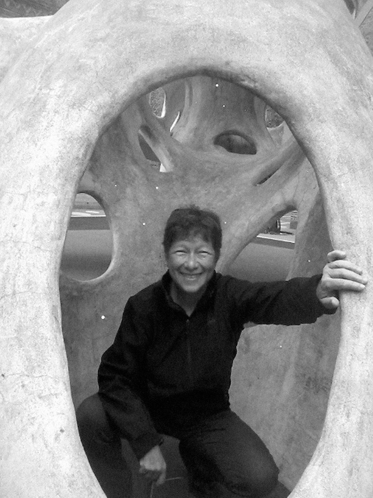

Anna Lowenhaupt Tsing (born 1952) is an American anthropologist. She is a professor in the Anthropology Department at the University of California, Santa Cruz. In 2018, she was awarded the Huxley Memorial Medal of the Royal Anthropological Institute. Tsing received her B.A. from Yale University and completed her M.A. (1976) and PhD (1984) at Stanford University.
Her ethnographic account of the matsutake mushroom in The Mushroom at the End of the World: On the Possibility of Life in Capitalist Ruins gives the readers a look into this rare, prized and expensive fungi, much appreciated in Japan. The mushroom sprouts in landscapes that have been considerably changed by people, in symbiosis with certain species of pine trees. Tsing's account of the matsutake contributes to the field of anthropology in her ability to study multi-species interactions, using the non-human subject to glean more about the human world.
Matsutake is the most valuable mushroom in the world—and a weed that grows in human-disturbed forests across the northern hemisphere. Through its ability to nurture trees, matsutake helps forests to grow in daunting places. It is also an edible delicacy in Japan, where it sometimes commands astronomical prices. In all its contradictions, matsutake offers insights into areas far beyond just mushrooms and addresses a crucial question: what manages to live in the ruins we have made?
A tale of diversity within our damaged landscapes, The Mushroom at the End of the World follows one of the strangest commodity chains of our times to explore the unexpected corners of capitalism. Here, we witness the varied and peculiar worlds of matsutake commerce: the worlds of Japanese gourmets, capitalist traders, Hmong jungle fighters, industrial forests, Yi Chinese goat herders, Finnish nature guides, and more. These companions also lead us into fungal ecologies and forest histories to better understand the promise of cohabitation in a time of massive human destruction.
By investigating one of the world’s most sought-after fungi, The Mushroom at the End of the World presents an original examination into the relation between capitalist destruction and collaborative survival within multispecies landscapes, the prerequisite for continuing life on earth.
The book was awarded the Gregory Bateson Prize and the Victor Turner Prize.
You can find more information on Wikipedia and Princeton University Press.